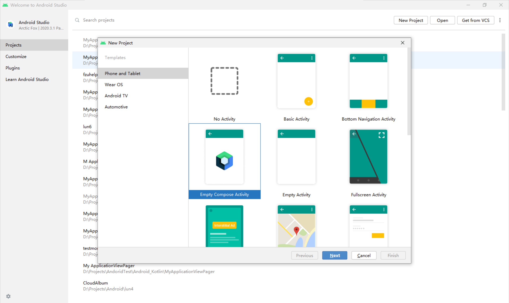

title: Android Compose 学习笔记（一)
date: 2021/10/31
tags:
- 20级
- Android
- Compose
author: ceningxn
Jetpack Compose 是用于构建原生Android界面的新工具包。使用更少的代码、强大的工具和直观的Kitlin API，可以简化并加快Android界面开发。Compose围绕可组合函数构建，放弃了原有使用xml的方式编写UI，没有view类的概念，用声明式的函数构建UI
使用Compose首先需要更新Android Studio Arctic Fox版本，更新完成后就可以在New Project中看到Compose项目。
选择Empty Compose Activity，compose最低支持API21，这里选择使用API24，点击finish完成项目创建。
可以看到，项目结构发生了改变，res包下的xml资源文件变成了kt代码文件。Activity界面多了个预览窗口。

到这里新Compose项目就创建完成了。
同样的需要更新Android Studio为Arctic Fox或更新版本，然后需要配置一些设置和依赖
build.gradle添加如下代码：android {
defaultConfig {
...
minSdkVersion 21
}
buildFeatures {
// Enables Jetpack Compose for this module
compose true
}
...
// Set both the Java and Kotlin compilers to target Java 8.
compileOptions {
sourceCompatibility JavaVersion.VERSION_1_8
targetCompatibility JavaVersion.VERSION_1_8
}
kotlinOptions {
jvmTarget = "1.8"
}
}
build.gradle添加如下代码：buildscript {
repositories {
google()
jcenter()
// To download the required version of the Kotlin-Gradle plugin,
// add the following repository.
maven { url 'https://dl.bintray.com/kotlin/kotlin-eap' }
...
dependencies {
classpath 'com.android.tools.build:gradle:4.0.0-alpha01'
classpath 'org.jetbrains.kotlin:kotlin-gradle-plugin:1.3.60-eap-25'
}
}
allprojects {
repositories {
google()
jcenter()
maven { url 'https://dl.bintray.com/kotlin/kotlin-eap' }
}
}
build.gradle：dependencies {
// You also need to include the following Compose toolkit dependencies.
implementation 'androidx.ui:ui-tooling:0.1.0-dev02'
implementation 'androidx.ui:ui-layout:0.1.0-dev02'
implementation 'androidx.ui:ui-material:0.1.0-dev02'
...
}
相比之下还是直接创建新项目方便
先把看不懂的代码删掉，留下主体。可以看到，Greeting、DefaultPreview两个方法用了@Compose注解，说明这是个Compose函数，Greeting方法接受一个字符串传给Compose库的Text函数用来显示文字，@Preview注解的DefaultPreview方法用来预览UI
class MainActivity : ComponentActivity() {
override fun onCreate(savedInstanceState: Bundle?) {
super.onCreate(savedInstanceState)
setContent {
Greeting("Android")
}
}
}
@Composable
fun Greeting(name: String) {
Text(text = "Hello $name!")
}
@Preview
@Composable
fun DefaultPreview() {
Greetinfag("Android")
}
启动看看，经典Hello Android
使用Text即可显示文字,如想改变显示效果,则需要给Text添加其他参数，下面是一些常用文字显示控制操作
color参数即可Text(text = "Hello Android!", color = Color.Blue)

将图片放入资源文件夹，使用DrawImage来显示图片
Image(
painter = painterResource(id = R.drawable.pic),
contentDescription = null
)
.jpg)
使用Button来显示一个按钮，在onclick中传入lambda参数设置点击事件,并用Text设置按钮的显示内容
Button(onClick = { /*TODO*/ }) {
Text(text = "Button")
}

想要显示多行内容,如果只是多次调用函数UI则会重叠,像这样

可用Column来实现多行显示，类似LinearLayoutd的垂直分布，多列显示用Row,这样就能显示多个内容了